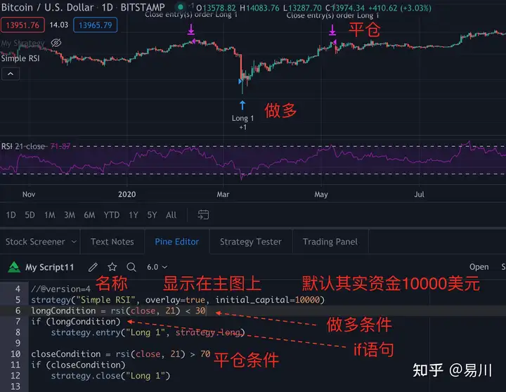

trading view 教程
首先，用Pine语言编写脚本的目的
一个是编写各种指标，分析走势；
一个是根据指标设定条件，制定策略，回测收益或者自动执行交易。
前者叫“study”，后者叫“strategy”
我翻译为“研究”和策略。
和其他语言一样，就是定义条件，计算机会根据条件显示结果，我们的任务就是把自己的条件，变成计算机能够看懂的语言。
先定义一个“study”，为其赋予名字，代码study(“My Script”)就代表这个study的代号是My Script，它是个标识符，要用双引号扩起来。前期先比着写就行。
1
2
3
4
|
study(title="一目均衡表", shorttitle="IchiEMA", overlay=true)
// 定义策略名、短标题和展示位置
// overlay为true展示在主图上
// 为false则展示在独立窗口内
|
plot(close)，其中plot是输出函数，完整的一个study必须要有输出，括号里的是输出的内容，close是指以收盘价输出。
既然有收盘价，自然还有开盘价，最高价和最低价，分别是open，high和low。
让我们看一下MACD指标：
1
2
3
4
5
6
7
8
9
10
11
12
13
14
15
16
17
18
19
20
21
22
23
24
25
26
27
28
29
30
31
32
33
34
35
36
|
//@version=4
study("MACD")
fast = 12, slow = 26
fastMA = ema(close, fast)
slowMA = ema(close, slow)
macd = fastMA - slowMA
signal = sma(macd, 9)
plot(macd, color=color.blue)
plot(signal, color=color.orange)
第1行：//@version=4
编译器指令的注释，它告诉编译器脚本将使用Pine的版本4。
第2行：study("MACD")
定义将出现在图表上的脚本的名称为“MACD”。
第3行：fast = 12, slow = 26
定义两个整数变量：fast和slow.
第4行：fastMA = ema(close, fast)
定义变量fastMA，EMA计算结果其参数等于fast(12)close，即收盘价。
第5行：slowMA = ema(close, slow)
定义变量slowMA，参数等于slow(26)来自close.
第6行：macd = fastMA - slowMA
定义变量macd这两个EMA的不同之处。
第7行：signal = sma(macd, 9)
定义变量signal的macd使用参数为9的SMA算法。
第8行：plot(macd, color=color.blue)
调用plot函数输出变量、macd用蓝线。
第9行：plot(signal, color=color.orange)
调用plot函数输出变量、signal用橙色的线条。
|
—如何用Pine语言编写完整的买进卖出策略
策略介绍
最简单的做多和平仓过程。
条件：
买入条件：RSI <30时进入多头 平仓条件：RSI> 70时平仓
订单和仓位管理
我们把做多和平仓都按一倍处理，不加杠杆，就等于现货了
1
2
3
4
5
6
7
|
strategy("Simple RSI", overlay=true, initial_capital=10000)
longCondition = rsi(close, 21) < 30
if (longCondition)
strategy.entry("Long 1", strategy.long)
closeCondition = rsi(close, 21) > 70
if (closeCondition)
strategy.close("Long 1")
|

其中strategey（），括号内可以定义默认的“开单类型”：以合约数、金额或者总持仓百分比开单，这后面如果不定义具体数量，则默认为1，即1份合约、1美元，或者1%仓位开单。
上例是默认以合约数为单位开单。
以现金和百分比开单的写法如下：
以现金为单位开单：
1
|
strategy(“My Strategy”, overlay=true,pyramiding=1000,default_qty_type=strategy.cash,default_qty_value=30,currency=currency.USD)
|
上篇文章只介绍了Pine语言的最基本逻辑，今天我们直接从例子下手，而且这实例是我自己编写出来的。
有伙伴可能觉得太快，其实这是最高效的方法，拿实例练习，即使某个语法看不懂，没事，先记下来，记得那种结果的表达方式就好，然后继续往下，快速过一遍是关键。先说下我认为学习Pine语言过程中的几个重要习惯。
学习Pine语言的重要习惯
1、勤搜索
搞定kexue上网是必须的，Pine语言用的人非常多，我们遇到的任何问题，几乎前人都遇到过，所以最快的解决办法就是去找之前的提问和回答。找到专门的讨论社区和帮助文档。
2、敢尝试
很多时候我们查到的答案和我们的具体问题并不完全一致，要敢于复制代码过来进行修改和尝试，大不了就报错，错了再找，再试。
3、做笔记
一定要做笔记和错误集合。
把每次出错的地方和最终的结决方案记下来。下次遇到就能查找，久而久之，你的常用指标和策略里的常用语法就都记住了。
4、把握整体框架和逻辑
一个指标，一定是希望特定条件下显示的特定结果。这是首先要在纸上按步骤写出结果的推理过程。
今天就拿大家比较熟悉的九神的比特币估值曲线做例子，看看它的编写过程以及最后的显示是怎样的。
九神BTC估值曲线的Pine语言编写